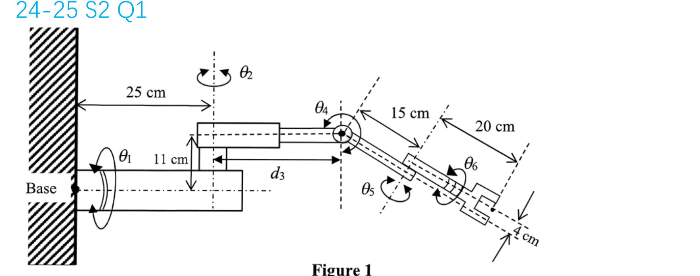

EE6221 · Kinematics mock from the tutor deck
Source: adapted from the user-supplied 6221 tutor PDF: slides 13 and 15 (labelled “24–25 S2 Q1”) and slide 25 (labelled “22–23 S2 Q3”). These are semester-exam-style questions in the kinematics material you have studied, not authenticated past Quiz 1 questions. The 50-minute limit and Question 2 marks are practice choices. Answer slides are excluded.
Use standard D–H parameters \(\theta_k,d_k,a_k,\alpha_k\), with \(^{k-1}T_k=R_z(\theta_k)T_z(d_k)T_x(a_k)R_x(\alpha_k)\). State your frame directions; consistent alternative D–H assignments are acceptable. Keep Question 1 lengths in cm. Question 2 uses its own length unit consistently.
Question 1 · Wall-mounted six-joint robot (20 marks)
The figure shows a six-joint manipulator mounted on a wall. Its joint variables are \(\theta_1,\theta_2,d_3,\theta_4,\theta_5,\theta_6\). Use the dimensions in the figure. Treat the gripper as a rigid tool attached after joint 6, not a seventh joint.

(a) 11 marks. Draw a link-coordinate diagram using the standard D–H algorithm. Label frames \(\{0\}\) through \(\{6\}\), the positive joint-axis directions \(z_0,\ldots,z_5\), the frame origins, and the chosen common normals \(x_1,\ldots,x_6\). Make your orientation choices clear enough that another person can read your D–H table.
(b) 9 marks. From your diagram, complete the six D–H rows. Identify the variable entry in each row. Then write \(^{0}T_1,\ ^{1}T_2,\ ^{2}T_3\) by substituting your first three rows into the standard link transform below. Do not multiply the three matrices.
| Joint k | \(\theta_k\) | \(d_k\) (cm) | \(a_k\) (cm) | \(\alpha_k\) | Variable |
|---|---|---|---|---|---|
| 1 | |||||
| 2 | |||||
| 3 | |||||
| 4 | |||||
| 5 | |||||
| 6 |
Question 2 · Inverse kinematics from a given transform (10 practice marks)
A three-variable arm has the following base-to-tool homogeneous transform. Only the tool position \((x,y,z)^T\) is required. Write \(C_i=\cos q_i\) and \(S_i=\sin q_i\) for \(i=1,2\).
(a) 5 marks. Derive \(q_1,q_2,q_3\) from the position \((x,y,z)^T\). Use a quadrant-aware angle function. State any reachability condition and discuss what happens when \(x=y=0\).
(b) 3 marks. Evaluate a joint configuration for a target centroid \((x,y,z)=(0.15,0.25,0.025)\). Show your numerical steps and substitute the result back into the position column.
(c) 2 marks. The target is an object to be picked up. Explain which practical conditions cannot be checked from this position-only calculation and the given data.